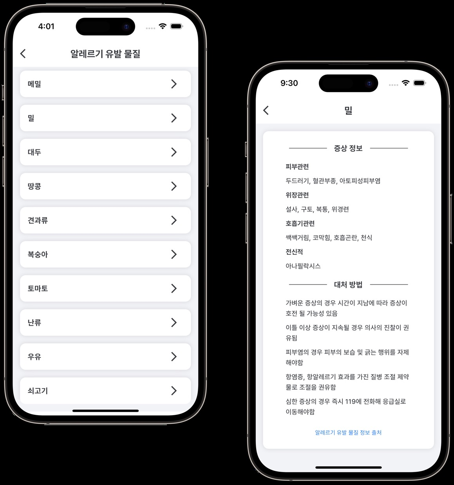

Project portfolio · 2023
나만의 알레르기 비서
사용자의 알레르기 정보를 기준으로 프랜차이즈 메뉴와 주변 식당을 살펴볼 수 있는 모바일 서비스입니다.
2023.05–2023.11 · Spring Boot · Java 17 · MySQL

01 · Problem & product
메뉴마다 다른 알레르기 유발 물질 정보를 외식 전에 확인하기 어렵습니다. 사용자가 자신의 알레르기 정보를 저장하고 메뉴를 고를 때 바로 비교할 수 있게 설계했습니다.
식약처가 지정한 21종 중 해당 물질을 저장합니다. 물질별 증상과 대처 정보를 보고, 위치를 기준으로 식당을 검색한 뒤 먹을 수 있는 메뉴를 확인합니다.
사용자에게 해당하는 유발 물질 선택
음식·음식점과 사용자 위치로 탐색
유발 물질을 제외한 메뉴 확인
증상·대처법·심각도 참고
02 · My work
100개 이상 가맹점을 보유한 프랜차이즈의 위치·제품·알레르기 정보를 수집하고, 약 1만 건의 데이터를 CSV로 정리해 AWS RDS에서 관리했습니다.
Spring Boot 서비스의 예외 응답을 공통화하는 Exception Enum을 구현했습니다. 초기 MVP 와이어프레임도 Figma로 설계했습니다.
03 · Data engineering
공공데이터에는 사용할 수 없는 행과 항목별로 다른 표기법이 섞여 있었습니다. 위치 좌표도 지도 API가 사용하는 형식과 달랐습니다.
Python과 스프레드시트 도구로 불필요한 데이터를 제거하고 항목을 정규화했습니다. 좌표계 변환을 검토해 지도 화면에 쓸 수 있도록 데이터를 가공했습니다.
서비스가 의존하는 외부 데이터는 수집 이후에도 신메뉴·단종 메뉴에 따라 바뀝니다. 최신 정보 유지에 필요한 수집·갱신 절차가 후속 과제로 남았습니다.
데이터 규모는 원본 프로젝트 자료의 약 1만 건 기준입니다.
04 · Technical decision
식당 검색에 약 1분이 걸렸습니다. 메뉴마다 사용자 알레르기 정보를 다시 읽는 서비스 로직에서 반복 조회가 발생했습니다.
사용자 알레르기 정보를 먼저 한 번 조회해 보관하고, 조회한 식당·메뉴와 비교하도록 로직을 바꿨습니다. 불필요한 DB 왕복을 줄여 검색 지연 문제를 해결했습니다.
API 응답 시간은 조회 방식까지 함께 설계해야 합니다. 더 큰 규모의 운영을 위해 데이터 갱신 자동화와 무중단 배포도 검토할 과제로 정리했습니다.
개선 후 응답 시간 수치는 원본 자료에 없어 별도 수치로 표현하지 않았습니다.